精确数量 / 刚体几何
整图重绘关闭。MATH-02 与 BIO-01 都证明 Canny 能保大轮廓，却不能可靠保证 四块拼片或每细胞六条染色单体。程序保留结构，模型只提供受限材质残差。
LIVE-DOCUMENT · LOOP ENGINEER · PHASE 3
这一阶段用数学、物理、化学、生物、地理五个程序动画的固定关键帧， 做了 15 个单变量实验。目标不是从随机结果里挑一张漂亮图，而是回答： 哪些信息能交给 SDXL，哪些事实必须留在程序里。
整图重绘关闭。MATH-02 与 BIO-01 都证明 Canny 能保大轮廓，却不能可靠保证 四块拼片或每细胞六条染色单体。程序保留结构，模型只提供受限材质残差。
可用 T2I ControlNet。CHEM-01 中，只有外包围 U 形时成功率 2/4； 加入烧杯口沿、液面、滴定管、活塞与滴嘴后达到 4/4。核心要求“线稿语义充分”， 具体器材线仍属案例插件。
程序决定大形，模型负责微纹理。PHYS-01 的整图 Img2Img 在强度升高时先丢波形， 后得到材质；多供体限幅中位数残差能保留程序低频结构并安全增加水纹。
一个 Canny 强度不够。GEO-02 中强控制留下墨线，弱控制丢雨区。 Phase 4 要把地形写实化与程序云雨层分开，而不是继续堆 prompt 或挑幸运 seed。
每轮严格按实际顺序展示：无标注程序输入 → 模型控制图 → 完整提示词与 token 数 → 全部 raw 候选 → 可选 composite → 解盲评分和结论。点击图片可看原尺寸； 每轮末尾可打开包含模型 ID、权重指纹、参数、seed、耗时和 SHA-256 的 JSON。
实验 01 · PHYS-01
要验证：连续高度场的详细 Canny 容易把柔软波纹雕成硬槽；只保留对象身份边界或关闭 Canny 应更自然。
唯一变量：只改变 ControlNet 接收到的边缘图及其开关；其余输入、提示词、模型、采样参数和种子完全一致。
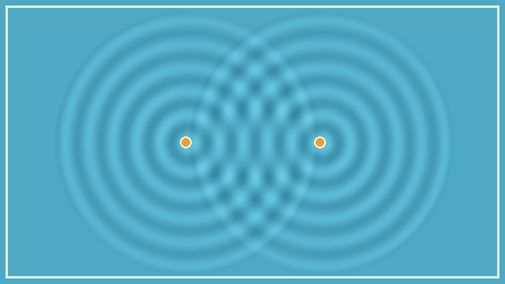
正向：Top-down photograph of a shallow ripple tank, locked camera, two synchronized point exciters fixed left and right, translucent blue water, realistic small ripples, subtle reflections, soft laboratory light, two circular wave trains overlap into clear nodal and antinodal bands, exactly two symmetric sources, concentric outward waves, unchanged rectangular tank
负向：text, labels, arrows, user interface, watermark, third wave source, moved sources, ocean shore, boats, giant breaking waves, frozen plastic, metallic rings, engraved grooves, hard neon outlines, duplicated emitters, perspective view, cropped tank, blur
正向 token：73 / 73；负向 token： 55 / 55； 两个上限都是 77，均未截断。

control_off
dense_canny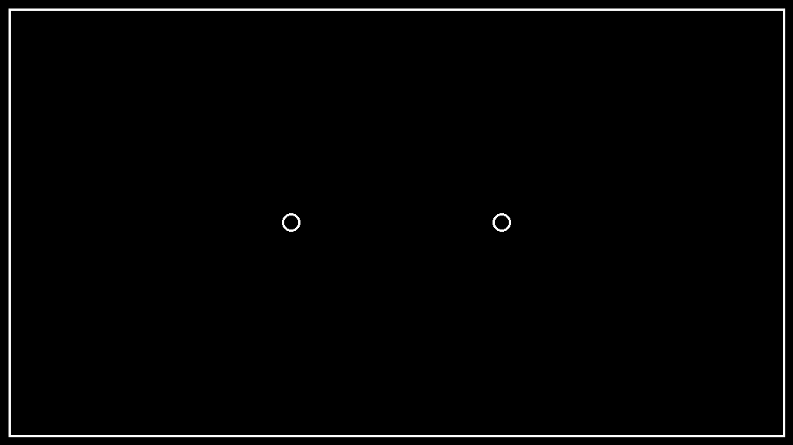
sparse_identity_boundary字母只是盲评编号；图中没有路线名或 seed，避免先入为主。
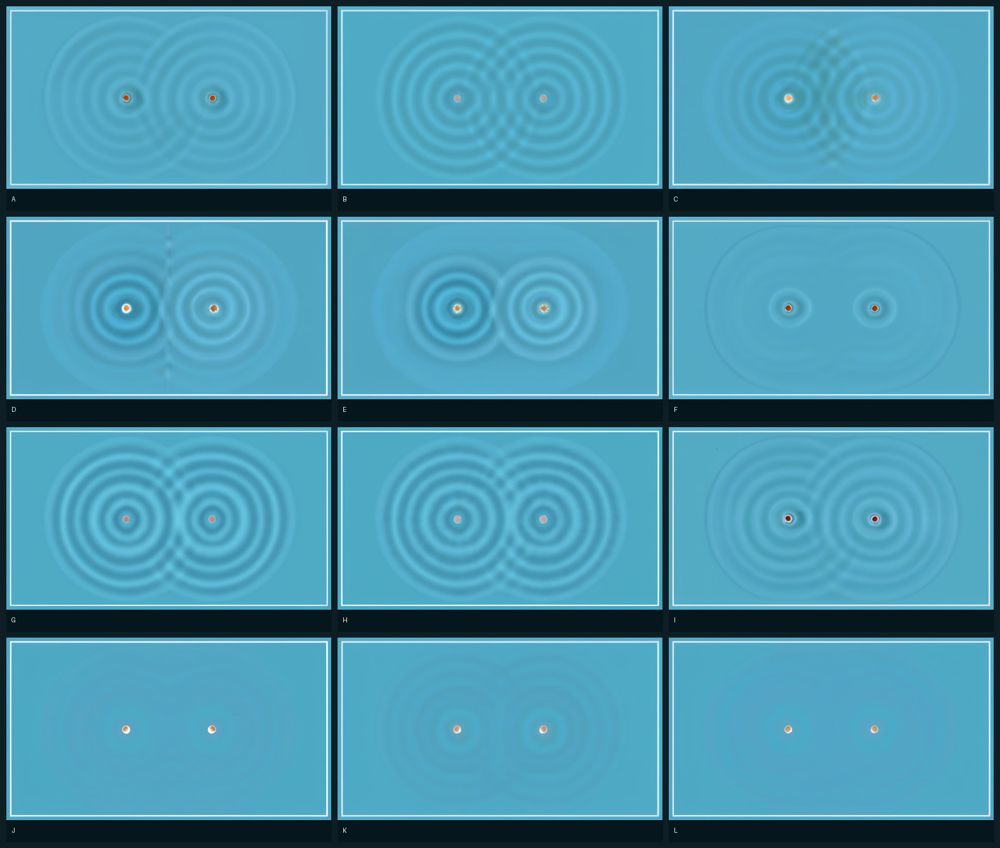
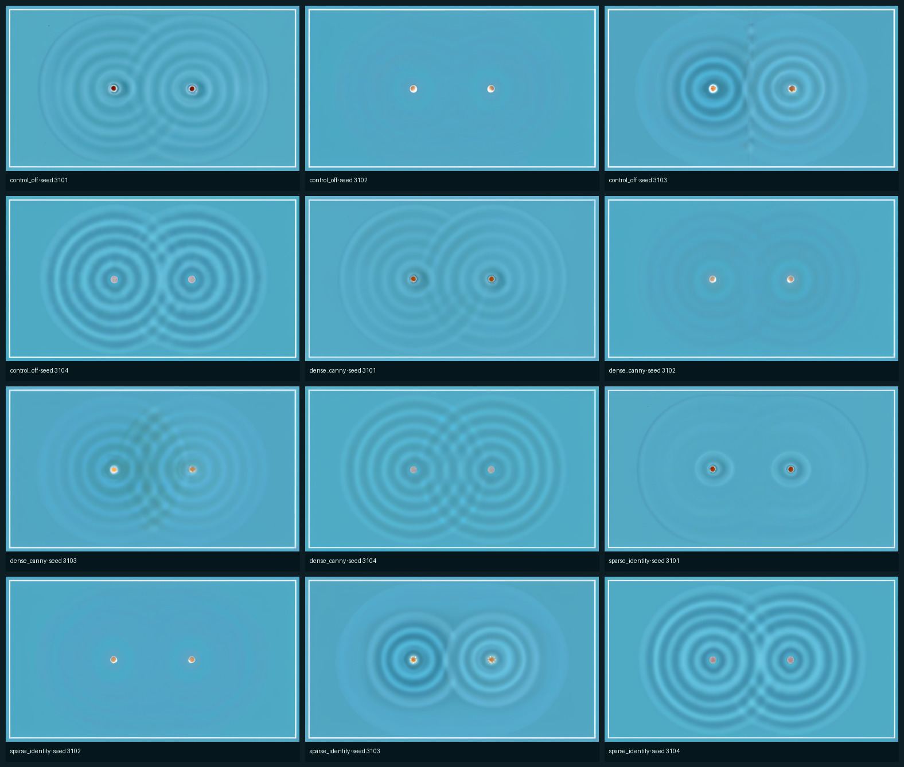
| 配置 | 分数 | 看到什么 |
|---|---|---|
control_off |
机制 2.75/5；材质 3.50/5；可用种子 50% | 没有控制时结果随复现编号明显波动：有的刻槽很重，有的几乎删除波纹。 |
dense_canny |
机制 4.00/5；材质 4.00/5；可用种子 75% | 与预期相反，0.55 强度的详细 Canny 在四个复现编号中最稳定；三张同时保留柔和水纹和干涉。 |
sparse_identity |
机制 2.75/5；材质 3.25/5；可用种子 50% | 稀疏边界稳定保留画框和两个振源，却不能保证模型保留连续波场；一半候选机制过弱。 |
实验 02 · PHYS-01
要验证：详细 Canny 存在中等强度窗口：过弱会丢失波场，过强会硬槽化，0.55 应比 0.25 和 0.90 更平衡。
唯一变量：只改变 ControlNet conditioning scale；程序底图、详细 Canny、提示词、模型、Img2Img 参数、采样器和种子完全一致。

正向：Top-down photograph of a shallow ripple tank, locked camera, two synchronized point exciters fixed left and right, translucent blue water, realistic small ripples, subtle reflections, soft laboratory light, two circular wave trains overlap into clear nodal and antinodal bands, exactly two symmetric sources, concentric outward waves, unchanged rectangular tank
负向：text, labels, arrows, user interface, watermark, third wave source, moved sources, ocean shore, boats, giant breaking waves, frozen plastic, metallic rings, engraved grooves, hard neon outlines, duplicated emitters, perspective view, cropped tank, blur
正向 token：73 / 73；负向 token： 55 / 55； 两个上限都是 77，均未截断。

dense_canny字母只是盲评编号；图中没有路线名或 seed，避免先入为主。
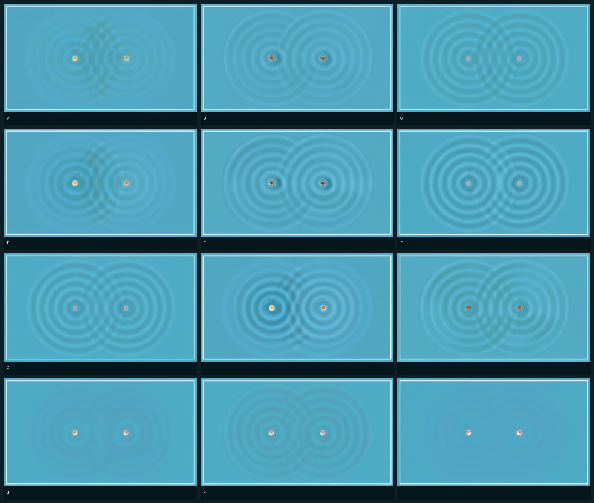
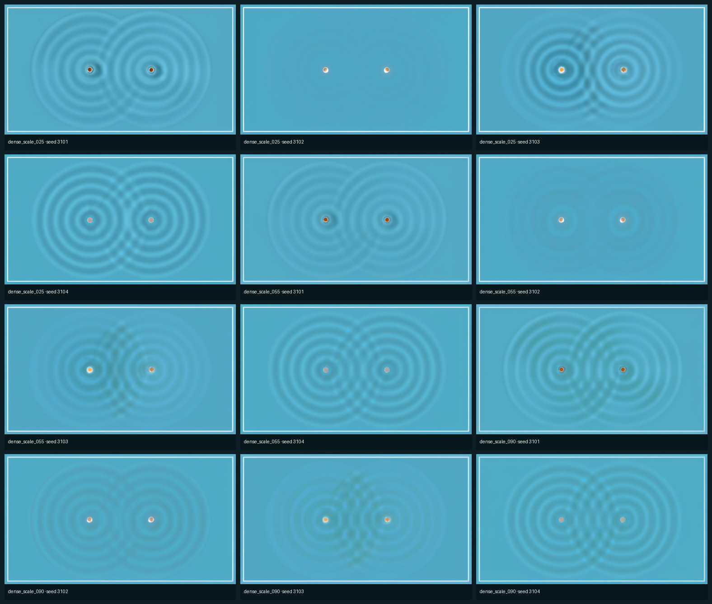
| 配置 | 分数 | 看到什么 |
|---|---|---|
dense_scale_025 |
机制 3.75/5；材质 3.50/5；可用种子 75% | 三张机制可读，一张完全丢波；弱控制没有稳定避免硬纹。 |
dense_scale_055 |
机制 4.00/5；材质 3.75/5；可用种子 75% | 复用基线仍是三张清楚、一张过淡。 |
dense_scale_090 |
机制 4.50/5；材质 4.00/5；可用种子 75% | 没有出现预期的普遍硬槽，平均机制与材质略高，但仍有一张干涉过淡。 |
实验 03 · PHYS-01
要验证：提高 Img2Img strength 会增加水面材质重绘，但也会降低双源干涉机制；0.50 应是当前折中。
唯一变量：只改变 Img2Img strength；程序底图、详细 Canny、ControlNet 0.90、提示词、模型、采样器和种子完全一致。

正向：Top-down photograph of a shallow ripple tank, locked camera, two synchronized point exciters fixed left and right, translucent blue water, realistic small ripples, subtle reflections, soft laboratory light, two circular wave trains overlap into clear nodal and antinodal bands, exactly two symmetric sources, concentric outward waves, unchanged rectangular tank
负向：text, labels, arrows, user interface, watermark, third wave source, moved sources, ocean shore, boats, giant breaking waves, frozen plastic, metallic rings, engraved grooves, hard neon outlines, duplicated emitters, perspective view, cropped tank, blur
正向 token：73 / 73；负向 token： 55 / 55； 两个上限都是 77，均未截断。
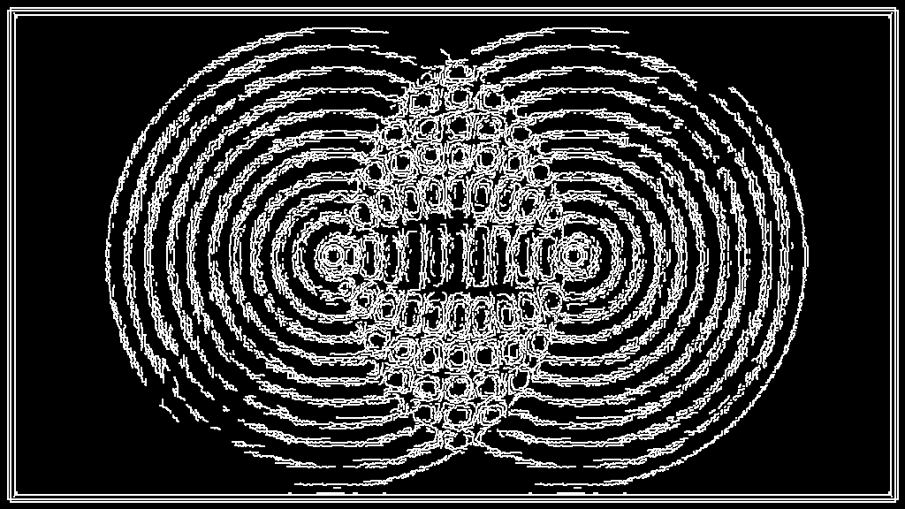
dense_canny字母只是盲评编号；图中没有路线名或 seed，避免先入为主。
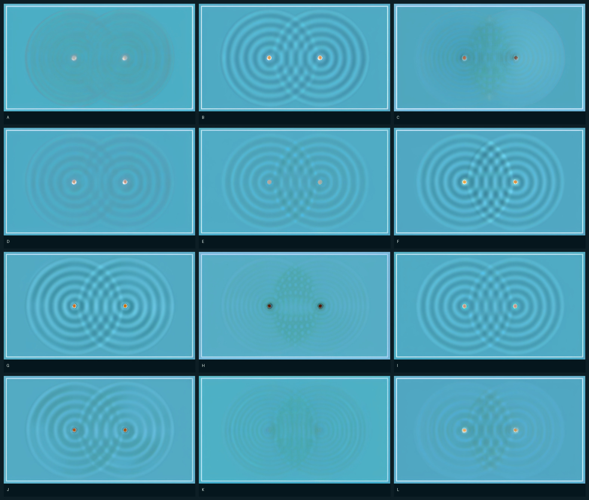
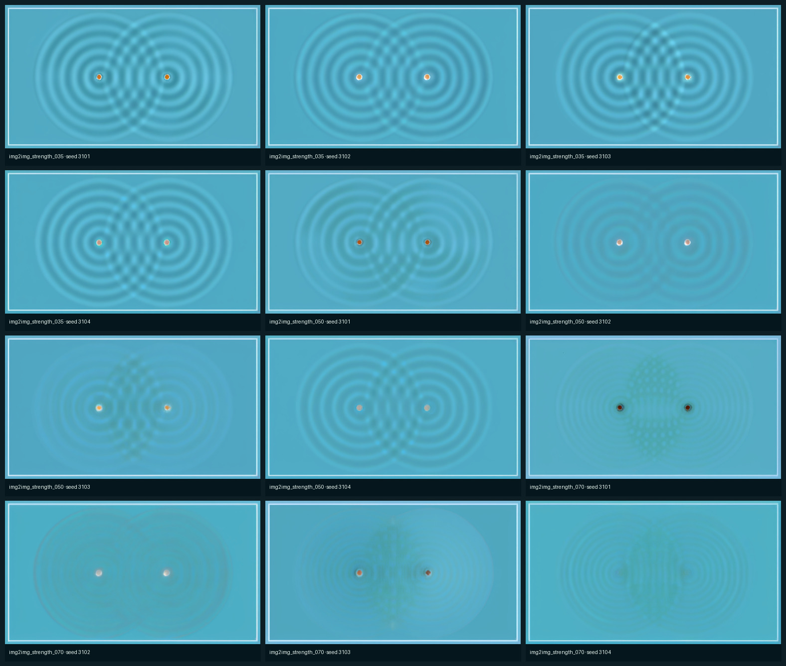
| 配置 | 分数 | 看到什么 |
|---|---|---|
img2img_strength_035 |
机制 5.00/5；材质 3.00/5；可用种子 100% | 四张都忠实继承程序波场，同时也忠实继承了程序化质感。 |
img2img_strength_050 |
机制 4.50/5；材质 4.00/5；可用种子 75% | 当前最好的整图折中，但仍未达到照片级水面材质。 |
img2img_strength_070 |
机制 2.75/5；材质 3.00/5；可用种子 25% | 三张明显丢失波场，材质平均分反而未提升。 |
实验 04 · PHYS-01
要验证：模型只生成无机制的水面材质供体，程序仅投影其中高频残差，可以在不移动连续波场的前提下减少程序塑料感。
唯一变量：与纯程序底图相比只增加模型材质残差；程序高度、振源身份、画框和教学结构不交给模型重画。

正向：Top-down macro photograph of a shallow laboratory water surface, locked camera, empty tank, transparent blue water, fine natural micro-ripples, subtle caustics, soft specular reflections, uniform quiet material texture without organized circular waves, even texture scale, stable lighting, no objects, no shoreline, no text
负向：large concentric rings, point sources, emitters, interference diagram, text, labels, arrows, user interface, watermark, shoreline, boats, animals, giant waves, frozen plastic, metallic grooves, hard neon outlines, perspective view, cropped tank, blur
正向 token：64 / 64；负向 token： 54 / 54； 两个上限都是 77，均未截断。
字母只是盲评编号；图中没有路线名或 seed，避免先入为主。
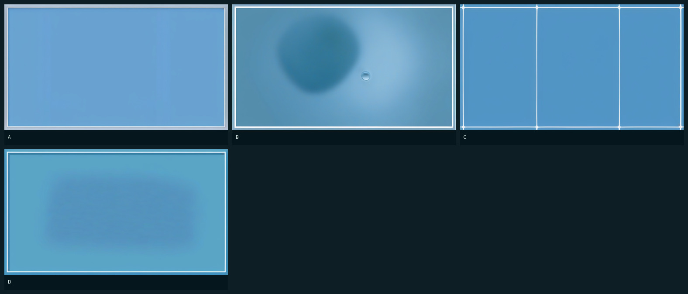
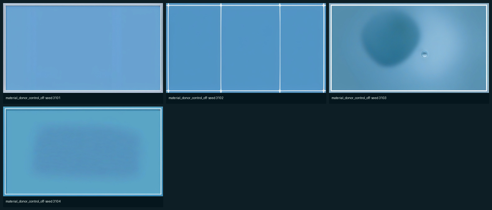
被拒绝的单供体投影：供体里的接缝和物体会一起进入 composite。
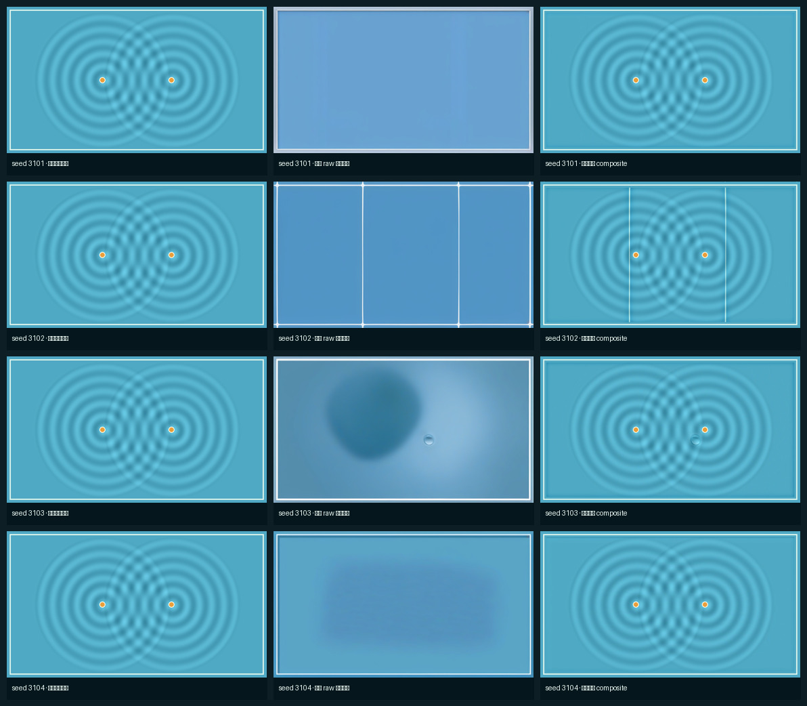
| 配置 | 分数 | 看到什么 |
|---|---|---|
seed_3101 |
材质增益 1/5；伪影控制 5/5 | 结构安全，但几乎看不出材质提升。 |
seed_3102 |
材质增益 1/5；伪影控制 1/5 | 高通把接缝当成纹理投进 composite，视觉失败。 |
seed_3103 |
材质增益 1/5；伪影控制 2/5 | 小圆边缘进入 composite；保护身份边界不足以识别新物体。 |
seed_3104 |
材质增益 1/5；伪影控制 5/5 | 没有明显伪影，也没有可感知材质增益。 |
实验 05 · PHYS-01
要验证：纯文生图材质供体的限幅高频残差经过四种子逐像素中位数后，可以滤除单一供体物体，同时安全增加水面微纹理。
唯一变量：相对被拒绝的单图投影，只改变供体生成方式和残差聚合；程序底图、保护区及其科学结构不变。

正向：Top-down macro photograph of calm shallow clear blue water, no horizon, no container, fine irregular surface micro-ripples, subtle caustics, small specular highlights, natural water texture, uniform edge-to-edge material sample without organized large waves, even texture scale, diffuse light, no focal object, no shoreline, no text
负向：concentric rings, point sources, emitters, interference diagram, pool tiles, panels, seams, dividing lines, spheres, droplets, text, labels, arrows, user interface, watermark, shoreline, boats, animals, giant waves, frozen plastic, metal, perspective view, horizon, blur
正向 token：71 / 71；负向 token： 63 / 63； 两个上限都是 77，均未截断。

control_off字母只是盲评编号；图中没有路线名或 seed，避免先入为主。
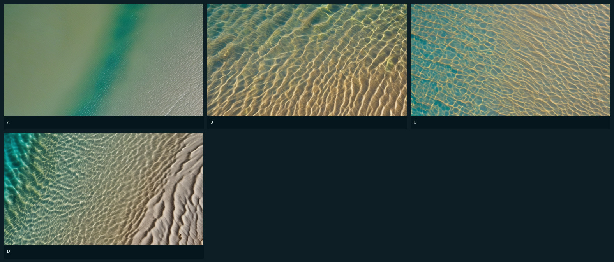
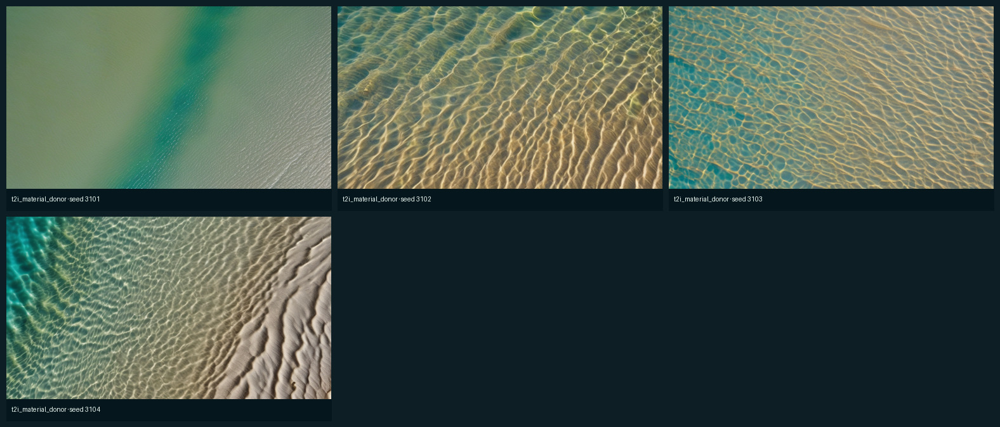
接受的水纹稳健投影：程序底图、raw 供体、留一法 composite 并排。
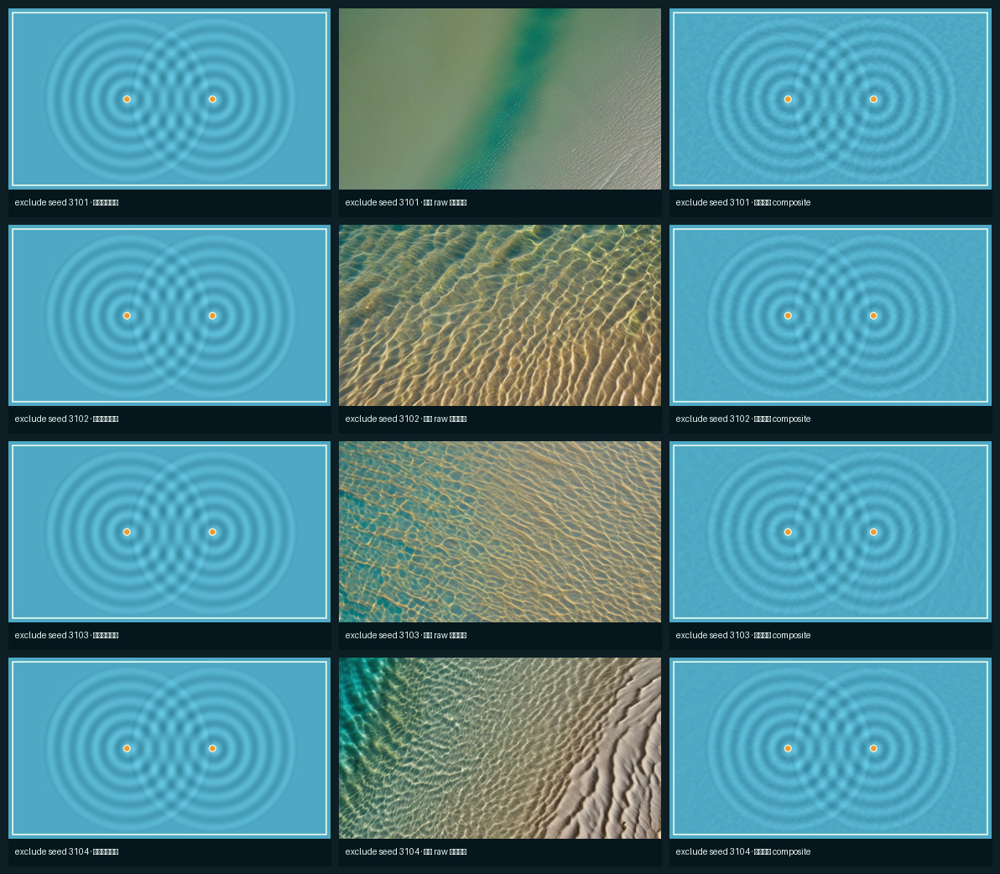
| 配置 | 分数 | 看到什么 |
|---|---|---|
gain_120 |
机器门 1/3；rejected | 纹理过量、低频偏移且留一法不稳定。 |
gain_040 |
机器门 3/3；usable_but_busy | 结构与稳健性通过，但交叉微纹理仍偏密。 |
gain_020 |
机器门 3/3；safe_but_too_subtle | 完全安全，材质增益难以感知。 |
gain_030 |
机器门 3/3；selected_candidate | 可见的细小水面变化与机制可读性达到当前最好平衡。 |
实验 06 · CHEM-01
要验证：PHYS-01 接受的四种子中位数材质残差可以不改参数地迁移到 CHEM-01，只在程序液体 region 内增加透明溶液微纹理。
唯一变量：算法、频带、限幅和 gain 完全复用 EXP-005；只把案例输入、材料语言和程序允许区域替换为 CHEM-01。

正向：Top-down macro material photograph of translucent pale pink aqueous solution, edge-to-edge sample, fine liquid microtexture, soft optical caustics, subtle natural color variation, clean laboratory lighting, uniform weak phenolphthalein endpoint pink without mixing plume, even texture scale, no container edge, no objects, no text, no bubbles
负向：beaker, flask, tube, container rim, dividing lines, panels, solid objects, crystals, cells, foam, large bubbles, mixing plume, text, labels, arrows, user interface, watermark, shoreline, metallic grooves, hard outlines, perspective view, horizon, blur
正向 token：73 / 73；负向 token： 58 / 58； 两个上限都是 77，均未截断。

control_off字母只是盲评编号；图中没有路线名或 seed，避免先入为主。
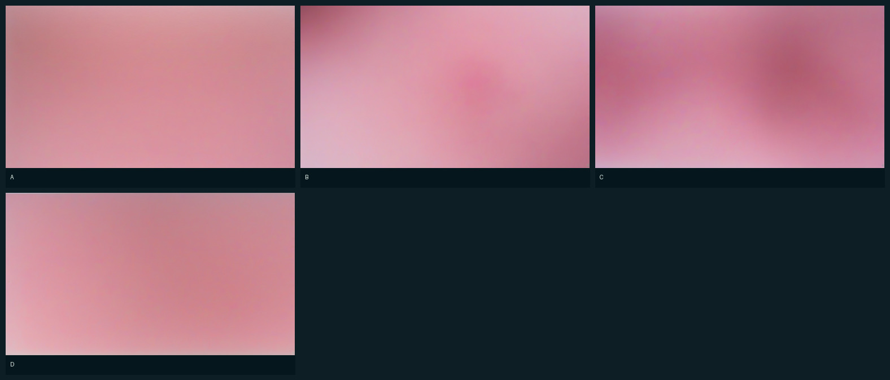
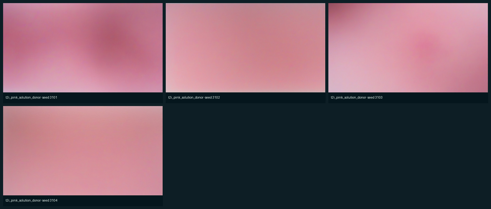
化学回归：机器门通过，但平滑粉色供体没有可见材质收益。
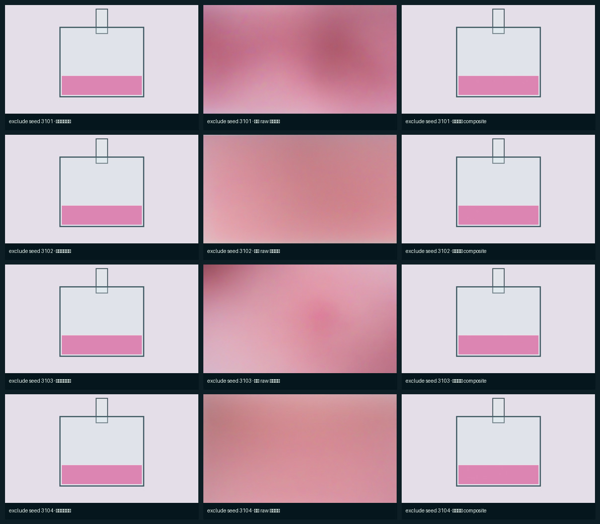
| 配置 | 分数 | 看到什么 |
|---|---|---|
selected_region_projection |
机制 5/5；材质 1/5；伪影控制 5/5 | 跨学科回归失败：同一稳健残差算法在 CHEM-01 结构安全且稳定，但四张供体都过于平滑，液体材质没有可见提升。 |
实验 07 · CHEM-01
要验证：透明滴定器材需要程序 hard_boundary 约束；稀疏器材边界应比关闭控制或详细成图 Canny 更好地平衡玻璃材质和器材结构。
唯一变量：只改变 ControlNet 边缘图及开关；程序图、提示词、模型、Img2Img 参数、采样器和种子完全一致。

正向：Front-facing documentary photograph of one transparent laboratory beaker beneath one glass burette, locked camera, centered apparatus, realistic clear glass, pale pink aqueous solution, soft reflections, neutral laboratory background, phenolphthalein endpoint with uniform faint persistent pink solution, one beaker, one burette, same liquid level, straight-on view, no text
负向：extra beakers, extra tubes, missing vessel, moved liquid level, pouring stream, mixing plume, crystals, foam, large bubbles, text, labels, arrows, user interface, watermark, plastic toy, metallic container, hard diagram lines, perspective view, cropped apparatus, blur
正向 token：76 / 76；负向 token： 58 / 58； 两个上限都是 77，均未截断。

control_off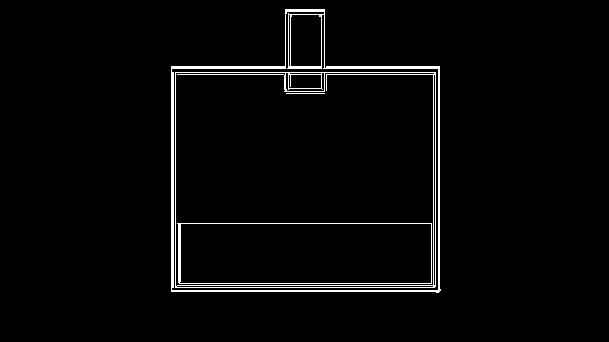
dense_canny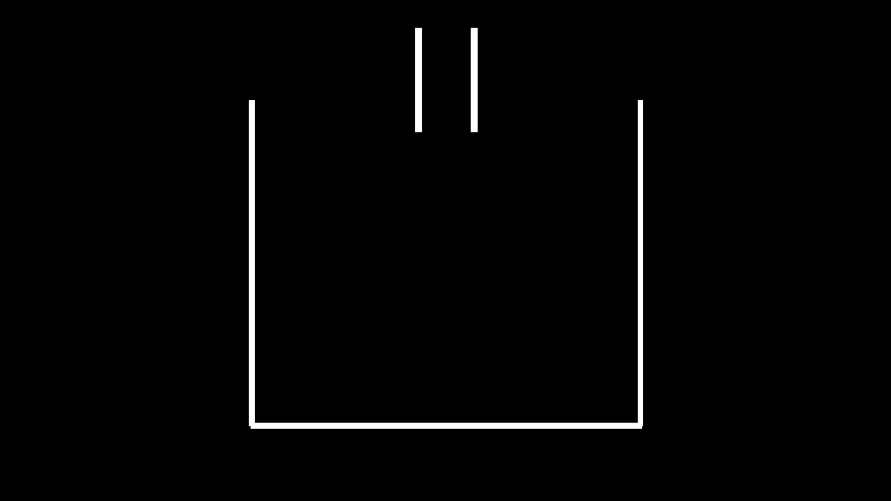
sparse_hard_boundary字母只是盲评编号；图中没有路线名或 seed，避免先入为主。
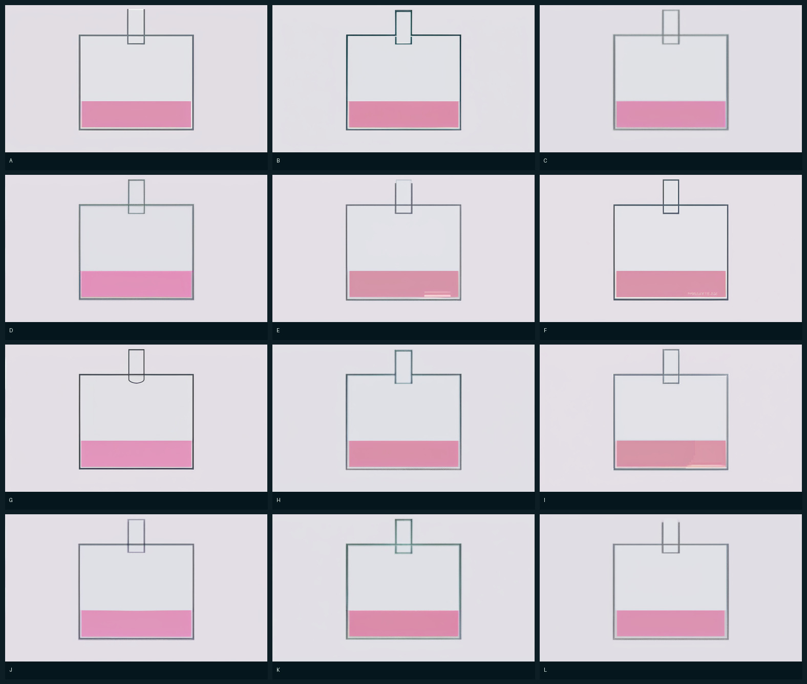
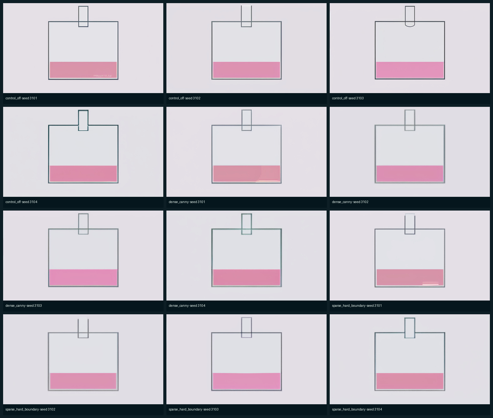
| 配置 | 分数 | 看到什么 |
|---|---|---|
control_off |
机制 4.50/5；材质 2.00/5；可用种子 75% | 初图本身保住器材，但外观仍是线框平涂；一张在液体中生成伪文字。 |
dense_canny |
机制 5.00/5；材质 2.00/5；可用种子 100% | 器材与液面最稳定，但四张都没有形成真实玻璃材质。 |
sparse_hard_boundary |
机制 5.00/5；材质 2.00/5；可用种子 100% | 硬边界被遵守，但材质与详细 Canny 没有可见优势，仍继承程序平涂。 |
实验 08 · CHEM-01
要验证：从噪声开始的 T2I ControlNet 能把稀疏器材线稿还原成真实玻璃，而 Img2Img 会被程序平涂初图锁住；稀疏边界还能比 T2I 无控制更稳地保持器材布局。
唯一变量：比较是否使用 Img2Img 初图以及 T2I 是否接收稀疏边界；提示词、权重、采样参数、分辨率和种子保持一致。

正向：Front-facing documentary photograph of one transparent laboratory beaker beneath one glass burette, locked camera, centered apparatus, realistic clear glass, pale pink aqueous solution, soft reflections, neutral laboratory background, phenolphthalein endpoint with uniform faint persistent pink solution, one beaker, one burette, same liquid level, straight-on view, no text
负向：extra beakers, extra tubes, missing vessel, moved liquid level, pouring stream, mixing plume, crystals, foam, large bubbles, text, labels, arrows, user interface, watermark, plastic toy, metallic container, hard diagram lines, perspective view, cropped apparatus, blur
正向 token：76 / 76；负向 token： 58 / 58； 两个上限都是 77，均未截断。

sparse_hard_boundary
control_off字母只是盲评编号；图中没有路线名或 seed，避免先入为主。
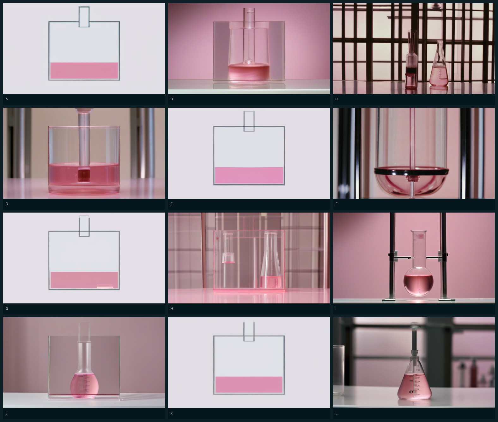
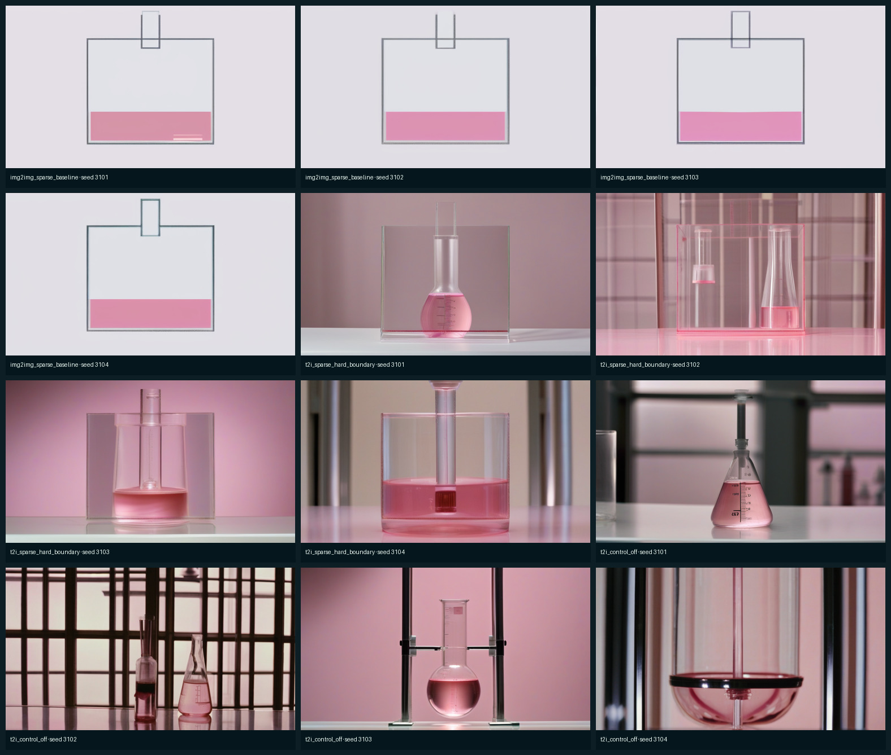
| 配置 | 分数 | 看到什么 |
|---|---|---|
img2img_sparse_baseline |
机制 5.00/5；材质 2.00/5；可用种子 100% | 器材和液位稳定，但仍是程序线框与平涂。 |
t2i_sparse_hard_boundary |
机制 3.00/5；材质 5.00/5；可用种子 50% | 四张都显著更真实，但只有两张形成大致一个容器与中央管；另外两张把抽象 U 形线解释成内嵌烧瓶或裁切装置。 |
t2i_control_off |
机制 1.50/5；材质 5.00/5；可用种子 0% | 材质真实但器材数量、类型和布局完全由模型自由决定。 |
实验 09 · CHEM-01
要验证：T2I ControlNet 的失败来自线稿语义不足；加入烧杯口沿、滴定管刻度、活塞和滴嘴等无文字部件线索，应显著提高器材机制成功率而不损失玻璃材质。
唯一变量：只替换 ControlNet 线稿内容；T2I 管线、提示词、模型、控制强度、采样参数、分辨率和种子完全一致。
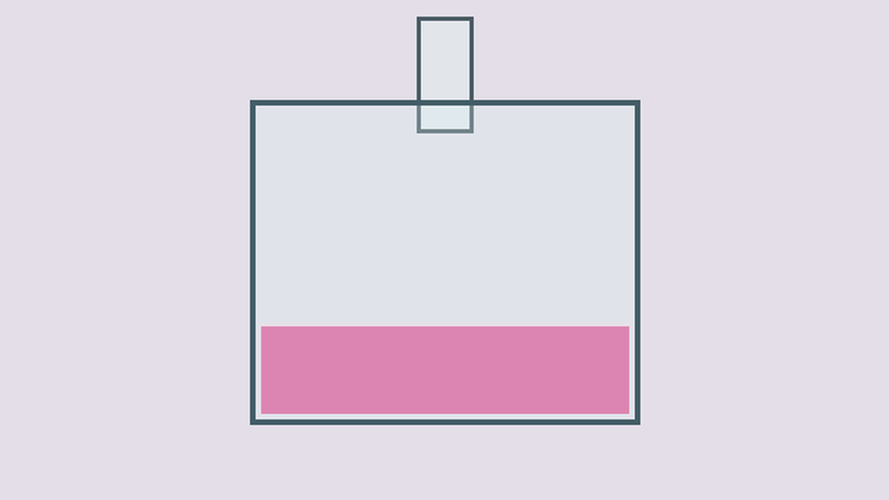
正向：Front-facing documentary photograph of one transparent laboratory beaker beneath one glass burette, locked camera, centered apparatus, realistic clear glass, pale pink aqueous solution, soft reflections, neutral laboratory background, phenolphthalein endpoint with uniform faint persistent pink solution, one beaker, one burette, same liquid level, straight-on view, no text
负向：extra beakers, extra tubes, missing vessel, moved liquid level, pouring stream, mixing plume, crystals, foam, large bubbles, text, labels, arrows, user interface, watermark, plastic toy, metallic container, hard diagram lines, perspective view, cropped apparatus, blur
正向 token：76 / 76；负向 token： 58 / 58； 两个上限都是 77，均未截断。

sparse_hard_boundary
semantic_apparatus_line_art字母只是盲评编号；图中没有路线名或 seed，避免先入为主。
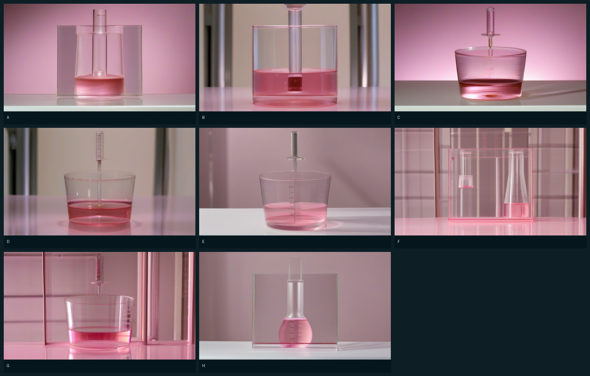
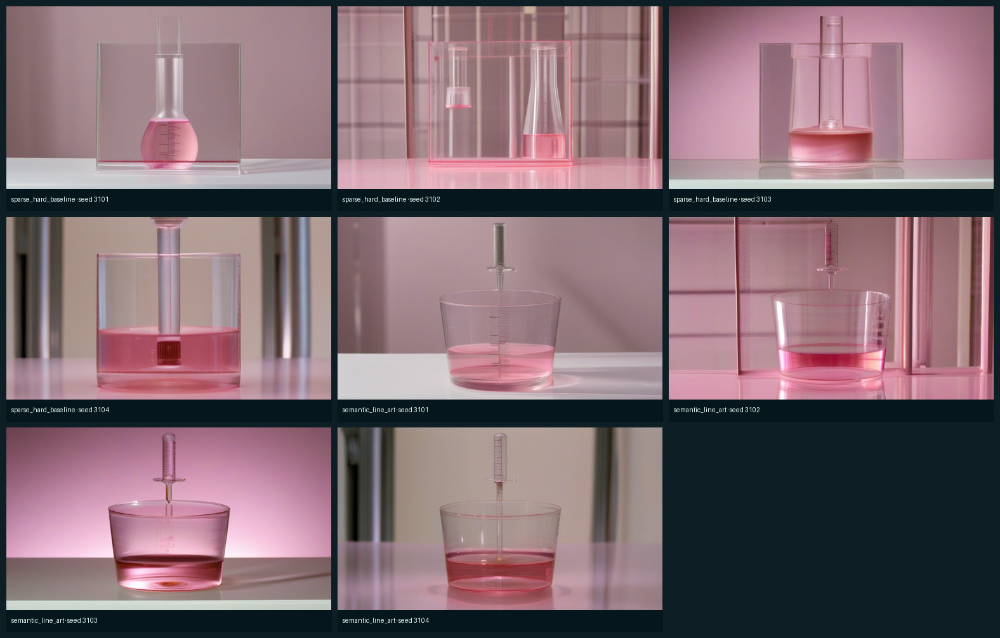
| 配置 | 分数 | 看到什么 |
|---|---|---|
sparse_hard_baseline |
机制 3.00/5；材质 5.00/5；可用种子 50% | 真实玻璃稳定出现，但抽象 U 形边界只有两张被正确解释成一个容器与中央管。 |
semantic_line_art |
机制 4.75/5；材质 5.00/5；可用种子 100% | 4/4 都形成开口烧杯、中央滴定管、活塞/滴嘴与容器内粉红液体；外观保持真实玻璃。 |
实验 10 · MATH-02
要验证：MATH-02 完整 hard_boundary 足以让 T2I ControlNet 保持四个全等三角形和两个方形剩余区，同时生成真实木质拼图材质。
唯一变量：相对程序基线只增加 T2I 材质生成；程序硬边界、提示词、模型、控制强度和四个复现编号冻结。
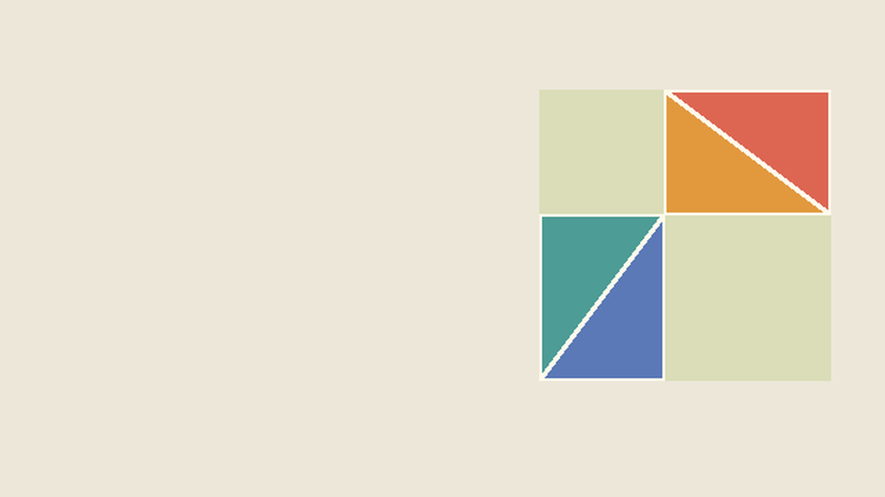
正向：Top-down studio photograph of one physical Pythagorean dissection puzzle inside a square frame, locked camera, four colored matte wooden congruent right-triangle pieces, soft shadows, off-white tabletop, pieces arranged around two uncovered square regions for a squared plus b squared, exactly four triangles, straight edges, unchanged square layout, no text
负向：extra pieces, missing piece, five triangles, curved edges, gaps, overlaps, distorted square, tangram animals, raised blocks, perspective view, hands, numbers, letters, formulas, text, labels, arrows, user interface, watermark, plastic toy, blur
正向 token：73 / 73；负向 token： 59 / 59； 两个上限都是 77，均未截断。
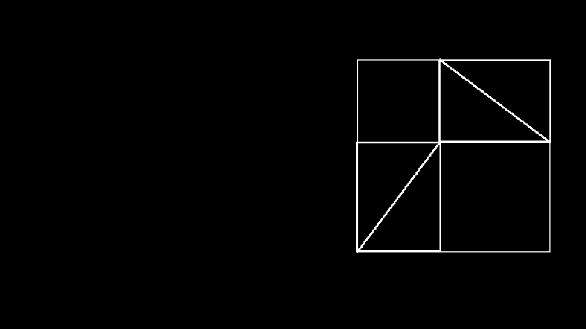
sparse_hard_boundary字母只是盲评编号；图中没有路线名或 seed，避免先入为主。
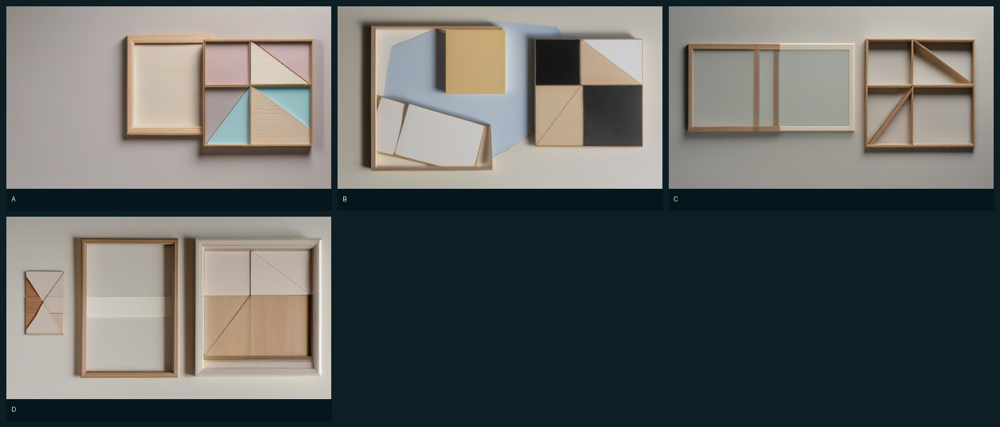
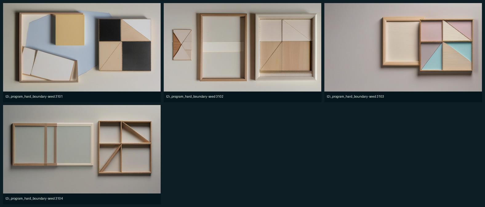
| 配置 | 分数 | 看到什么 |
|---|---|---|
t2i_program_hard_boundary |
机制 2.50/5；材质 4.75/5；可用种子 0% | 四张都把受控区域解释成木质拼图并大体保留局部拓扑，但 4/4 都在左侧大面积空白区臆造了第二个框、额外拼块或额外面板。 |
实验 11 · MATH-02
要验证：同一拼图线稿裁切、等比放大并居中后，T2I 应减少在空白区臆造的额外框与拼块，同时保留木质材质和机制拓扑。
唯一变量：相对 EXP-010 只改变控制图的位置与占用率；线条拓扑、提示词、模型、控制强度、采样参数、分辨率和种子完全一致。

正向：Top-down studio photograph of one physical Pythagorean dissection puzzle inside a square frame, locked camera, four colored matte wooden congruent right-triangle pieces, soft shadows, off-white tabletop, pieces arranged around two uncovered square regions for a squared plus b squared, exactly four triangles, straight edges, unchanged square layout, no text
负向：extra pieces, missing piece, five triangles, curved edges, gaps, overlaps, distorted square, tangram animals, raised blocks, perspective view, hands, numbers, letters, formulas, text, labels, arrows, user interface, watermark, plastic toy, blur
正向 token：73 / 73；负向 token： 59 / 59； 两个上限都是 77，均未截断。
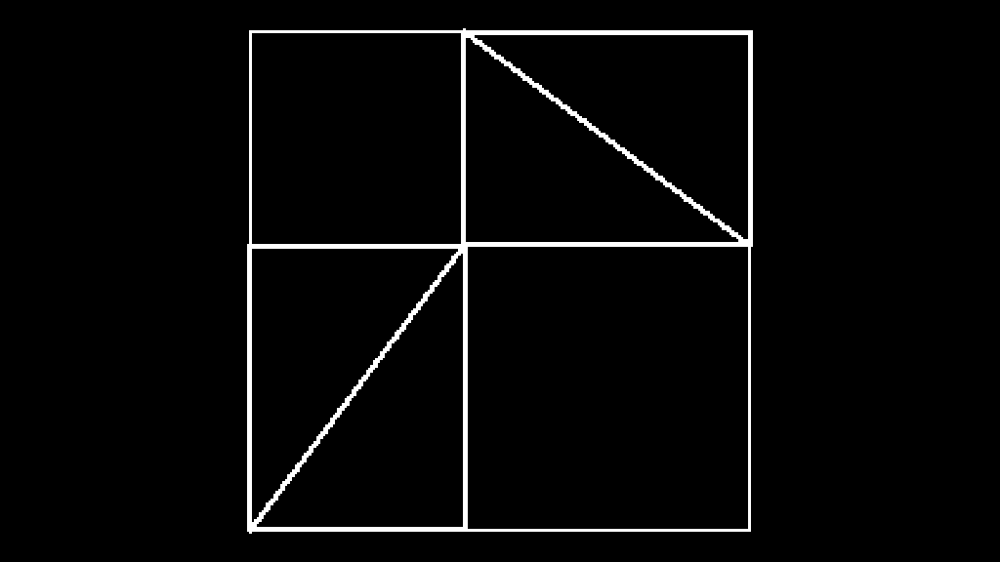
centered_hard_boundary字母只是盲评编号；图中没有路线名或 seed，避免先入为主。
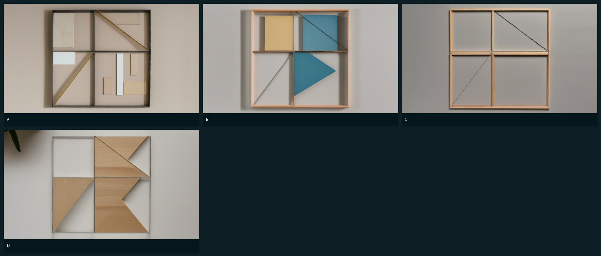
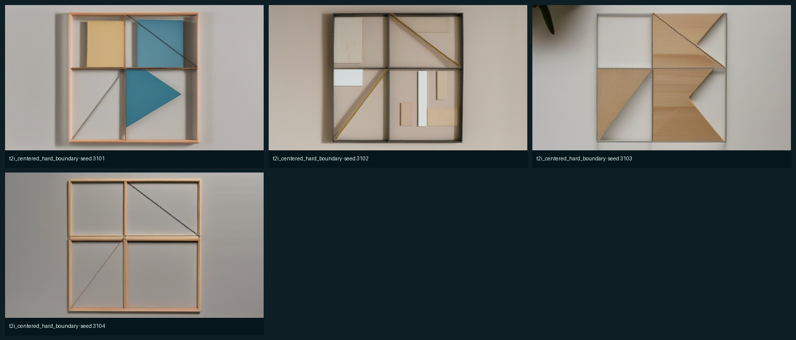
| 配置 | 分数 | 看到什么 |
|---|---|---|
t2i_centered_hard_boundary |
机制 2.00/5；材质 4.50/5；可用种子 0% | 4/4 都只生成一个居中框，额外面板问题消失；但 4/4 仍把四个三角形解释成空隔间、任意木块或错误数量的拼片。 |
实验 12 · MATH-02
要验证：无对象木纹供体的多种子稳健高频残差，只投影到程序拼图区后，可增加自然木材触感且逐像素保留数学结构。
唯一变量：相对程序底图只增加模型派生的受限高频材质；程序构图、颜色、身份、边界、空区与背景不变。

正向：Top-down macro material photograph of uniform fine-grain unfinished pale wood, edge-to-edge sample, subtle natural wood fibers, fine pores, low contrast matte surface, diffuse studio light, even material swatch without boards or assembled objects, uniform texture scale, no seams, no focal object, no text
负向：planks, board seams, panels, frames, puzzle pieces, blocks, furniture, knots, cracks, holes, saw marks, strong stripes, perspective, shadows, hands, numbers, letters, formulas, text, labels, arrows, user interface, watermark, plastic, metal, blur
正向 token：66 / 66；负向 token： 62 / 62； 两个上限都是 77，均未截断。

control_off字母只是盲评编号；图中没有路线名或 seed，避免先入为主。
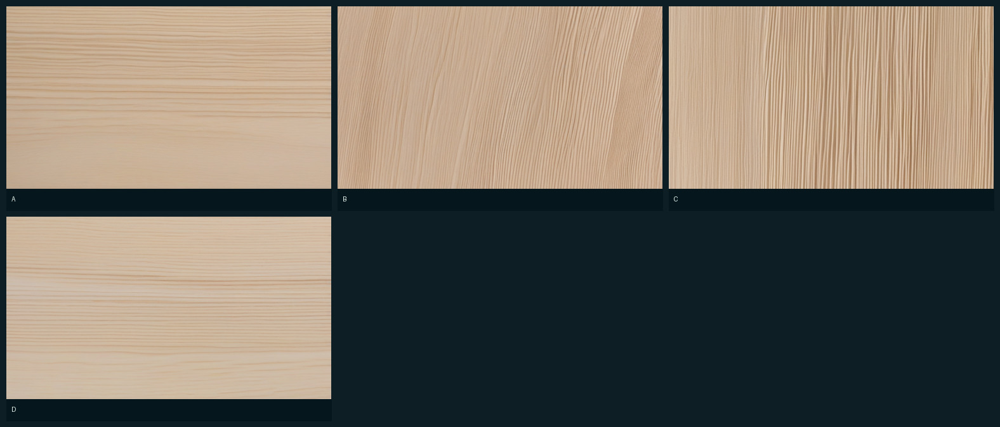
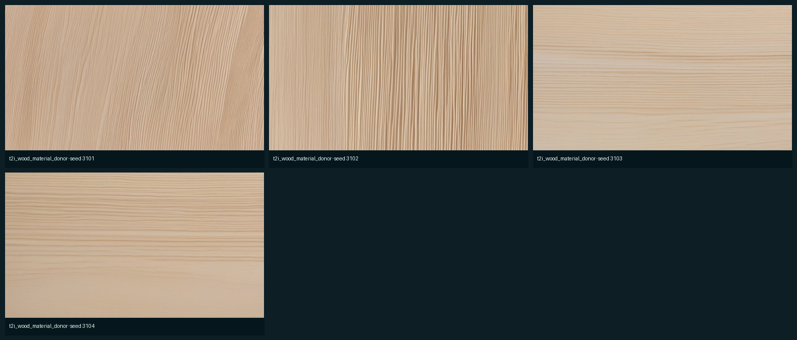
接受的数学安全路线：木纹只进入四个拼片，空区和背景不改。
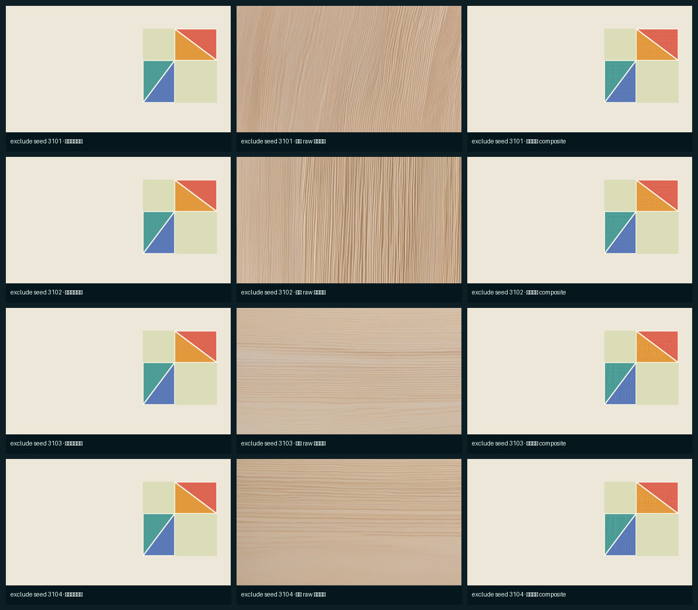
| 配置 | 分数 | 看到什么 |
|---|---|---|
t2i_wood_material_donor_plus_gain_070_projection |
机制 5.00/5；材质 3.50/5；可用种子 100% | 四个 raw 供体都是无对象木纹；gain 0.7 合成图只在四个程序拼片内出现细木纹，四块身份、共享边、两个方形空区和背景逐像素保持。 |
{'selected_variant': 'gain_070', 'non_allowed_max_abs_difference_0_255': 0.0, 'low_frequency_mse_vs_program': 0.023946, 'leave_one_out_maximum_mae_0_255': 0.163041, 'hard_checks_passed': '3/3'}
实验 13 · BIO-01
要验证：包含细胞轮廓和十二条染色单体线的 dense Canny，可让 T2I 生成显微材质并保持两个子细胞、每个六条染色单体。
唯一变量：相对程序关键帧只增加固定的 SDXL T2I ControlNet 重绘；控制图、提示词、模型、参数和四个种子冻结。
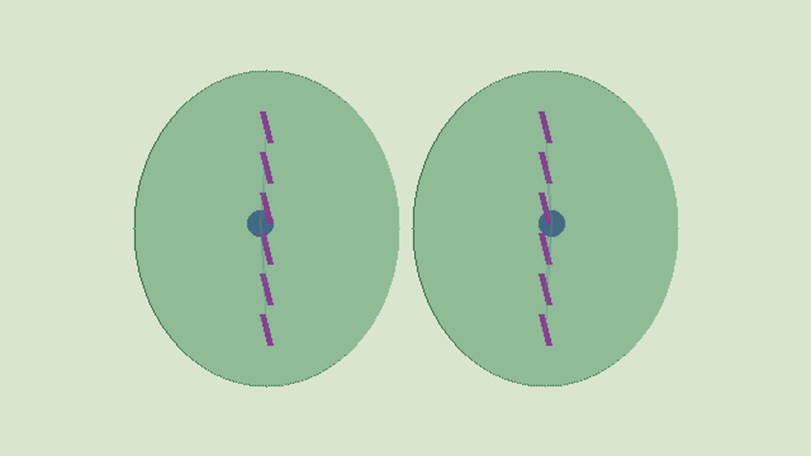
正向：Top-down fluorescence micrograph of exactly two daughter cells after mitosis, translucent membranes, subtle cytoplasm, magenta chromosomes, dark background, exactly six separated straight chromatids inside each cell, two cells, six chromatids each, symmetric layout, no text
负向：third cell, extra cells, one cell, extra chromatids, missing chromatids, chromosome clumps, duplicated nuclei, oversized nucleus, anatomy, tissue, embryos, bacteria, labels, arrows, numbers, letters, text, user interface, watermark, plastic icon, cartoon, blur
正向 token：63 / 63；负向 token： 68 / 68； 两个上限都是 77，均未截断。
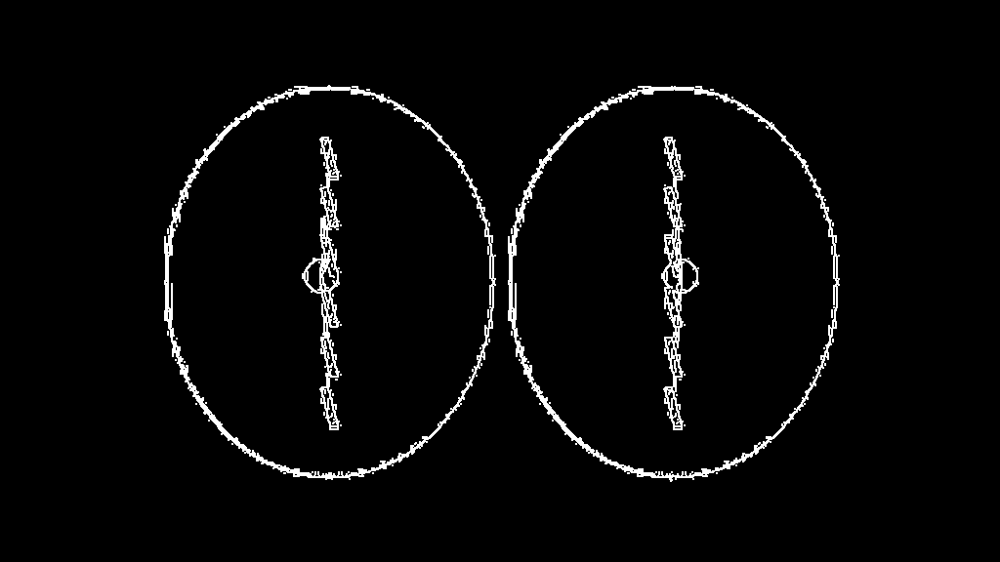
dense_canny字母只是盲评编号；图中没有路线名或 seed，避免先入为主。
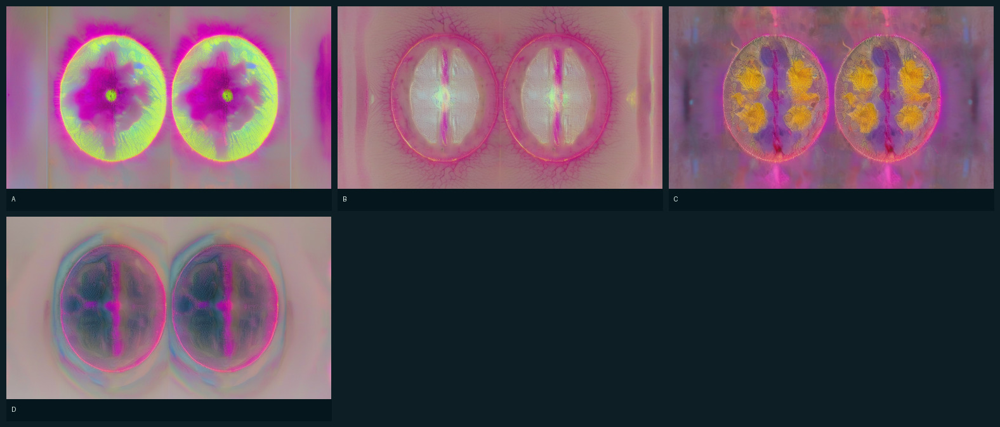
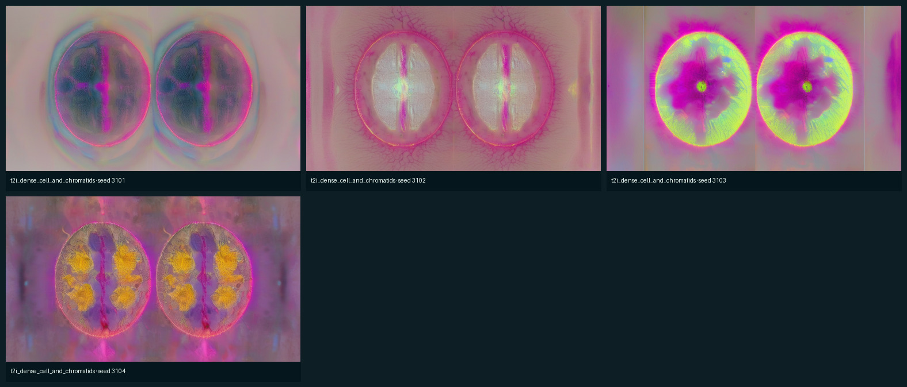
| 配置 | 分数 | 看到什么 |
|---|---|---|
t2i_dense_cell_and_chromatids |
机制 2.50/5；材质 3.00/5；可用种子 0% | 4/4 保留左右两个细胞的大轮廓，但 0/4 能在每个细胞内明确数出六条染色单体；模型把短线融合成中轴、团块或器官状结构。 |
实验 14 · GEO-02
要验证：对连续地形与降水分区案例，dense Canny T2I 可保留单峰和迎风坡雨区，同时生成自然山体、天空与雨幕。
唯一变量：相对程序关键帧只增加固定的 SDXL T2I ControlNet 重绘；控制图、提示词、模型、参数和四个种子冻结。

正向：Side-view landscape photograph of one mountain ridge beneath open sky, natural green rock, atmospheric sky, localized rain curtain, daylight, heavy rain only on the left windward slope; right leeward slope stays dry, one peak, same silhouette, rain left of summit, dry right, no text
负向：second mountain, multiple peaks, rain on right slope, rain everywhere, snowstorm, waterfall, ocean, lake, buildings, roads, people, arrows, labels, diagram, numbers, letters, text, user interface, watermark, fantasy landscape, plastic, blur
正向 token：61 / 61；负向 token： 54 / 54； 两个上限都是 77，均未截断。

dense_canny字母只是盲评编号；图中没有路线名或 seed，避免先入为主。
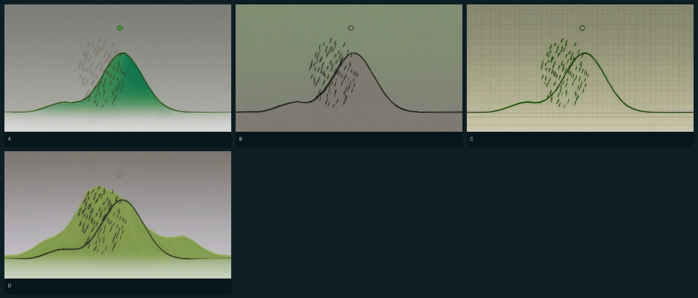
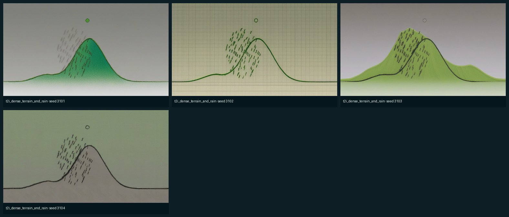
| 配置 | 分数 | 看到什么 |
|---|---|---|
t2i_dense_terrain_and_rain |
机制 4.50/5；材质 1.75/5；可用种子 0% | 4/4 保留单峰和左侧迎风坡降雨，机制空间分区稳定；但强控制把山线与雨线直接描成墨线，整体仍像插图或网格纸而非自然景观。 |
实验 15 · GEO-02
要验证：降低 dense Canny 控制强度可在保留单峰与左雨右干的同时减少墨线感，改善自然材质。
唯一变量：只扫描 controlnet_conditioning_scale 0.35、0.55、0.75；其余输入、提示词、模型、参数与种子完全一致。
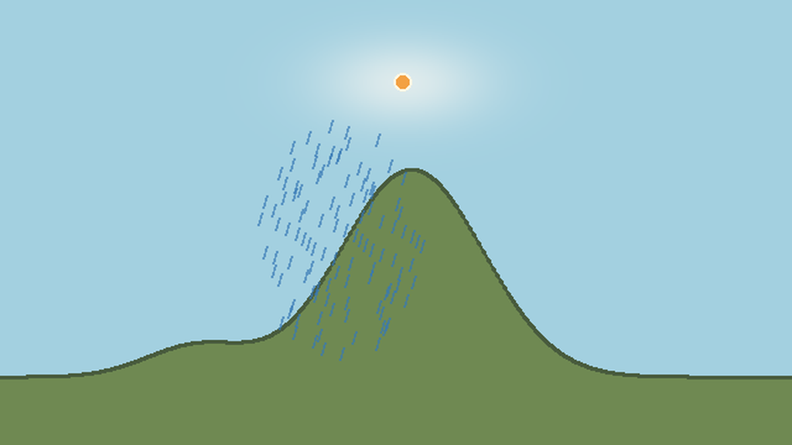
正向：Side-view landscape photograph of one mountain ridge beneath open sky, natural green rock, atmospheric sky, localized rain curtain, daylight, heavy rain only on the left windward slope; right leeward slope stays dry, one peak, same silhouette, rain left of summit, dry right, no text
负向：second mountain, multiple peaks, rain on right slope, rain everywhere, snowstorm, waterfall, ocean, lake, buildings, roads, people, arrows, labels, diagram, numbers, letters, text, user interface, watermark, fantasy landscape, plastic, blur
正向 token：61 / 61；负向 token： 54 / 54； 两个上限都是 77，均未截断。
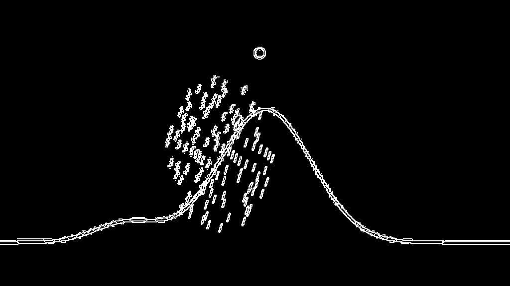
dense_canny字母只是盲评编号；图中没有路线名或 seed，避免先入为主。
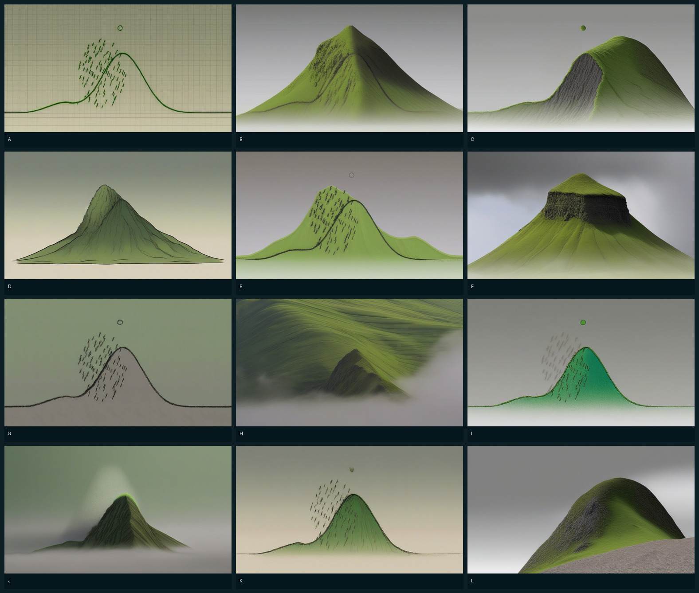
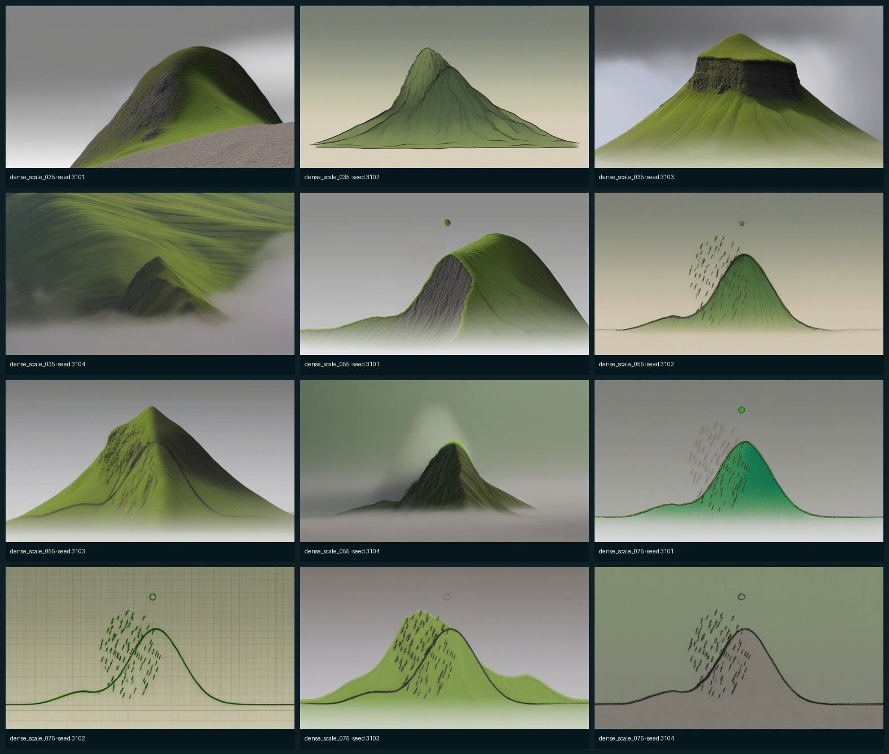
| 配置 | 分数 | 看到什么 |
|---|---|---|
dense_scale_035 |
机制 1.75/5；材质 4.25/5；可用种子 0% | 山体最接近照片，但 4/4 都丢失明确左侧雨区，且三张明显改变原单峰剖面或视角。 |
dense_scale_055 |
机制 3.75/5；材质 3.50/5；可用种子 25% | 两张保住左雨右干但雨仍像黑色划线；另两张把雨变成雾或完全丢失。只有单一种子接近折中，未达到 3/4 稳健门。 |
dense_scale_075 |
机制 4.50/5；材质 1.75/5；可用种子 0% | 4/4 稳定保留机制分区，但全部保留明显程序墨线，与 EXP-014 一致。 |
| 门禁 | 结果 | 证据 |
|---|---|---|
| 五学科代表覆盖 | 通过 | MATH-02、PHYS-01、CHEM-01、BIO-01、GEO-02 |
| 实验预算 | 通过 | 每轮最多 12 张；总计 92 次新图片调用，20 张严格缓存复用 |
| 模型与提示完整性 | 通过 | 15/15 权重 ID 与指纹一致；0 次 token 静默截断 |
| 证据可审计 | 通过 | 全部控制图、提示、raw、composite、盲表、失败结果和哈希保留 |
| 能力边界是否可执行 | 通过 | 形成按 exact-count、semantic-boundary、continuous-field、layered-field 路由的规则 |
# 先重建确定性的五学科程序动画 .venv/bin/python -m modules.video_model.stage2.phase2 # 单轮：准备控制图、检查提示，再调用已登记模型 /opt/venv/bin/python -m modules.video_model.stage2.phase3_experiment \ --experiment EXP-20260729-009 --prepare /opt/venv/bin/python -m modules.video_model.stage2.phase3_experiment \ --experiment EXP-20260729-009 --generate # 需要受限材质时，执行确定性多供体合成 /opt/venv/bin/python -m modules.video_model.stage2.phase3_experiment \ --experiment EXP-20260729-012 --project-material-ensemble \ --projection-variant gain_070 --residual-gain 0.7 # 重建本总报告并检查所有哈希、预算和链接 .venv/bin/python -m modules.video_model.stage2.phase3 --report .venv/bin/python -m modules.video_model.stage2.phase3 --check
{kind=link}
{kind=link}
{kind=link}
{kind=link}
{kind=link}
{kind=link}
{kind=link}
{kind=link}
{kind=link}
{kind=link}
{kind=link}
{kind=link}
{kind=link}
{kind=link}